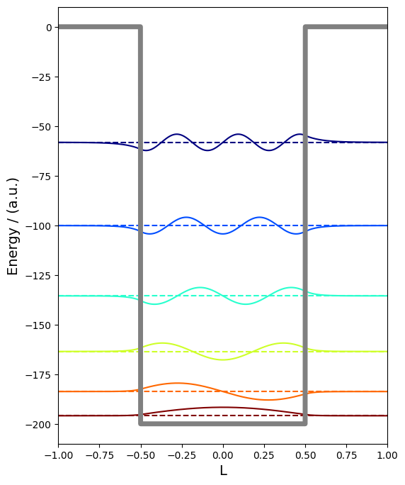
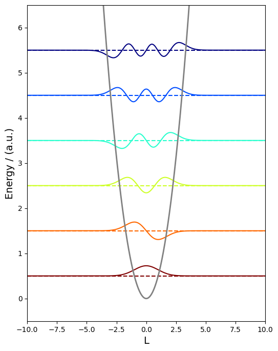

Aplikazioak problema konplexuagoetan#
Behin diferentzia finituen metodoa kutxa bateko partikula bezalako problema erraz batean erabili dugunean, problema konplexuagoak landu ditzakegu.
Potentzial-hobia#
Gure bigarren praktika analitikoki ebatz dezakegun beste sistema eredu batean oinarrituko da, potentzial-hobian. Sistema honetan, aztergai den partikula potentzial baten eraginpean dago \(V(x)=-D\) baldin eta soilik baldin \(-A<x<A\). Aurreko kasuan bezala, definizio batzuekin hasiko gara.
import numpy as np
import scipy.linalg as spla
import matplotlib as mpl
import matplotlib.pyplot as plt
# atomic units
hbar = 1.0
m = 1.0
# set precision of numerical approximation
steps = 2000
Ondoren, gure potentzial-hobiaren sakonera eta gure kalkulurako \(x\) ardatzeko mugak definituko ditugu.
D = 100.0
A = 1.0
W = A/2
# create x-vector from -A to A
xvec = np.linspace(-A, A, steps)
# get step size
h = xvec[1] - xvec[0]
Potentzial-hobian, \(V\) zero ez denez, hamiltondarra energia zinetiko eta potentzialaren terminoek osatzen dute,
Lehenik, potentziala kalkulatuko dugu
def well_potential(W, x, D):
pot = -D*(np.sign(x+W) - np.sign(x-W))
return pot
U = well_potential(W, xvec, D)
Ondoren, Laplaziarren matrize-adierazpen bat kalkulatuko dugu diferentzia finituen metodoa erabiliz:
# create Laplacian via 3 point finite-difference method
Laplacian = (-2.0*np.diag(np.ones(steps)) + \
np.diag(np.ones(steps-1),1) + \
np.diag(np.ones(steps-1),-1))/(float)(h**2)
# create the Hamiltonian
Hamiltonian = np.zeros((steps,steps))
[i,j] = np.indices(Hamiltonian.shape)
Hamiltonian[i==j] = U
Hamiltonian += (-0.5)*((hbar**2)/m)*Laplacian
Funtzio propioak (eigenvectors) eta energiak (eigenvalues) lortzeko, Scipy-ren eigh funtzio bat erabiliko dugu.
def diagonalize_hamiltonian(Hamiltonian):
return spla.eigh(Hamiltonian)
evals, evecs= diagonalize_hamiltonian(Hamiltonian)
print (" lowest bound state energies:")
for i in range(6):
print ('E(%g) = %.2f'%(i+1,evals[i]))
lowest bound state energies:
E(1) = -195.93
E(2) = -183.74
E(3) = -163.55
E(4) = -135.55
E(5) = -100.15
E(6) = -58.22
fig, ax = plt.subplots(figsize=(6,8))
for i, v in enumerate(evecs.transpose()[:6]):
#V_new, ScaleFactor = infinite_well_plot_scaling(evals, evecs, xvec, W)
color = mpl.cm.jet_r((i)/(float)(6-1),1)
ax.plot(xvec, 100*v + evals[i], c=color)
ax.axhline(evals[i], c=color, ls='--')
ax.plot(xvec, U, c='gray', lw=5)
ax.set_xlim(xvec[0], xvec[-1])
#x.set_ylim(-evals[0], evals[6])
ax.set_xlabel('L', fontsize=14)
# set y label
ax.set_ylabel('Energy / (a.u.)', fontsize=14)
Text(0, 0.5, 'Energy / (a.u.)')

Osziladore harmonikoa#
Landuko dugun hurrengo sistema eredua osziladore harmonikoa da. Sistema honetan, aztergai den partikula potentzial baten eraginpean dago $\( V=1/2kx^2 \)$ Berriro ere, konstante batzuk definituz hasiko gara
# atomic units
hbar = 1.0
m = 1.0
# set precision of numerical approximation
steps = 2000
Ondoren, gure osziladore harmonikoaren malguki-konstantea eta ardatzeko mugak definituko ditugu
spring = 1
W = 5
A = W*2.0
# create x-vector from -A to A
xvec = np.linspace(-A, A, steps)
# get step size
h = xvec[1] - xvec[0]
Orain, potentziala eraiki eta Laplaziarrari gehitu diezaiokegu
def harmonic_potential(x, spring):
pot = 0.5*(spring**2)*x**2
return pot
U = harmonic_potential(xvec, spring)
# create Laplacian via 3 point finite-difference method
Laplacian = (-2.0*np.diag(np.ones(steps)) + \
np.diag(np.ones(steps-1),1) + \
np.diag(np.ones(steps-1),-1))/(float)(h**2)
# create the Hamiltonian
Hamiltonian = np.zeros((steps,steps))
[i,j] = np.indices(Hamiltonian.shape)
Hamiltonian[i==j] = U
Hamiltonian += (-0.5)*((hbar**2)/m)*Laplacian
Berriz ere, Scipy-ra joko dugu balio eta bektore propioak kalkulatzeko
def diagonalize_hamiltonian(Hamiltonian):
return spla.eigh(Hamiltonian)
evals, evecs = diagonalize_hamiltonian(Hamiltonian)
print (" lowest bound state energies:")
for i in range(6):
print ('E(%g) = %.2f'%(i+1,evals[i]))
lowest bound state energies:
E(1) = 0.50
E(2) = 1.50
E(3) = 2.50
E(4) = 3.50
E(5) = 4.50
E(6) = 5.50
fig, ax = plt.subplots(figsize=(6,8))
for i, v in enumerate(evecs.transpose()[:6]):
#V_new, ScaleFactor = infinite_well_plot_scaling(E,V,xvec,W)
color=mpl.cm.jet_r((i)/(float)(6-1),1)
ax.plot(xvec, 3*v + evals[i], c=color)
ax.axhline(evals[i], c=color, ls='--')
ax.plot(xvec, U, c='gray', lw=2)
ax.set_xlim(xvec[0], xvec[-1])
ax.set_ylim(-evals[0], evals[6])
ax.set_xlabel('L', fontsize=14)
# set y label
ax.set_ylabel('Energy / (a.u.)', fontsize=14)
Text(0, 0.5, 'Energy / (a.u.)')
